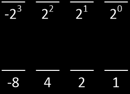
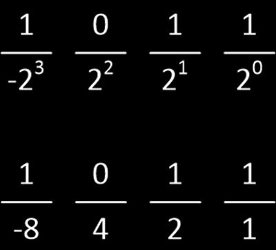
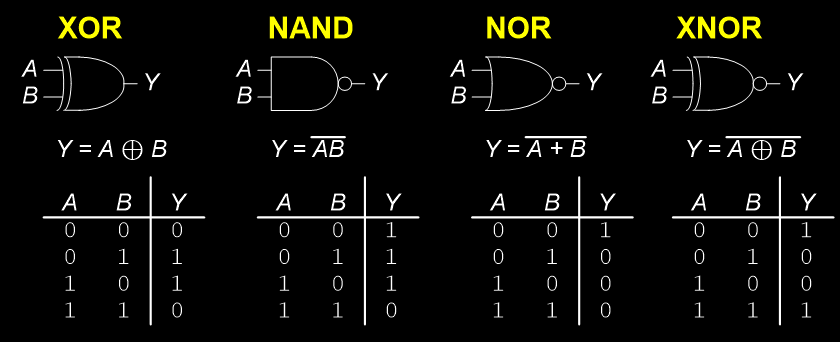
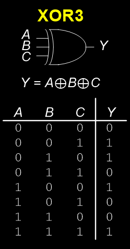
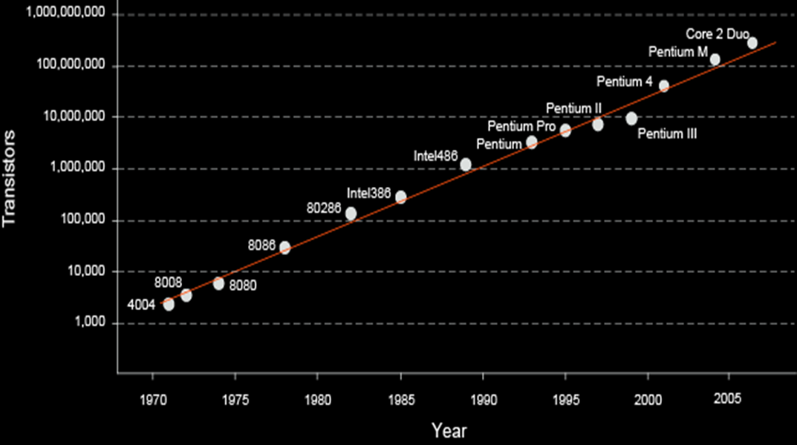

Why do we use a bit to denote sign?
Convert the signed binary number $1010_2$ to decimal.
Convert the signed binary number $01110000_2$ to decimal.
The greatest negative number which can be stored in 8 bits using signed-bit representation is
A 4-bit 2’s complement number


Convert the two’s complement binary number $1010_2$ to decimal.
Convert the two’s complement binary number $01110000_2$ to decimal.
The greatest negative number which can be stored in 8 bits using signed-bit representation is
What is the greatest positive number?
Invert the bits and add 1
Take the two’s complement of 6.
What is the decimal value of 1001
Sign-bit vs 2’s complement representations
Similarities:
Difference:
Example 1: 6 + -6
Example 2: -2 + 3
Say we want to subtract $n$ from $m$, both of which are $p$-bit numbers
Proposed by George Boole (1815-1864)
Binary variable
Three fundamental logic operations: AND, OR, and NOT
Perform logic functions: inversion (NOT), AND, OR, NAND, NOR, etc.
Single-input: NOT gate, buffer
Two-input: AND, OR, XOR, NAND, NOR, XNOR
Multiple-input



Multi-input XOR: Odd parity – the output is 1 when an odd number of inputs is 1.

Moore’s Law: number of transistors on a computer chip doubles every year (observed in 1965) Since 1975, transistor counts have doubled every two years.

| A | B | $C_{out}$ | S |
|---|---|---|---|
| 0 | 0 | 0 | 0 |
| 0 | 1 | 0 | 1 |
| 1 | 0 | 0 | 1 |
| 1 | 1 | 1 | 0 |
$S = AB$
$C_{out} = A\oplus B$
| $C_{in}$ | A | B | $C_{out}$ | S |
|---|---|---|---|---|
| 0 | 0 | 0 | 0 | 0 |
| 0 | 0 | 1 | 0 | 1 |
| 0 | 1 | 0 | 0 | 1 |
| 0 | 1 | 1 | 1 | 0 |
| 1 | 0 | 0 | 0 | 1 |
| 1 | 0 | 1 | 1 | 0 |
| 1 | 1 | 0 | 1 | 0 |
| 1 | 1 | 1 | 1 | 1 |
$S = A \oplus B \oplus C$
$C_{out} = AB + BC_{in} + AC_{in}$